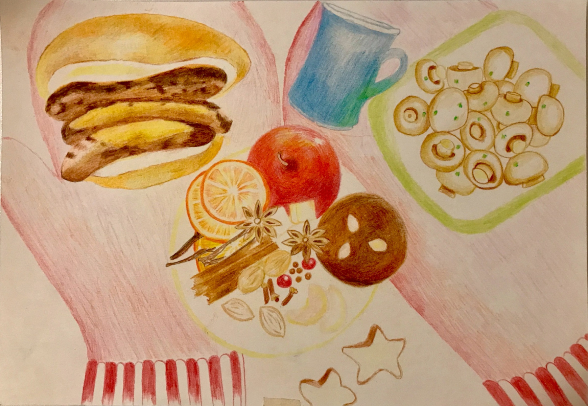
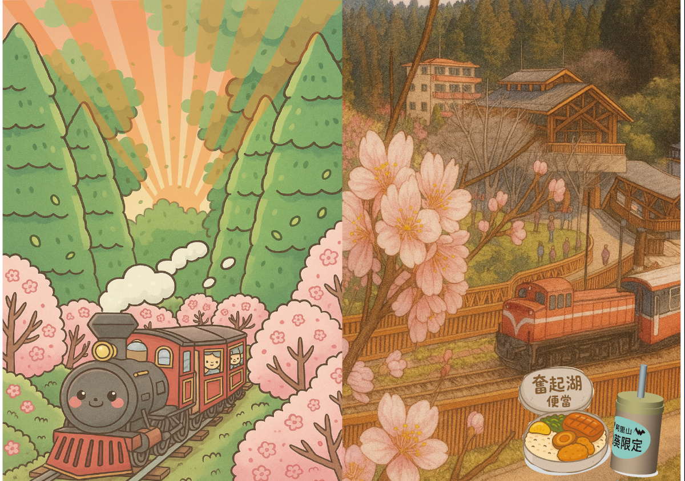
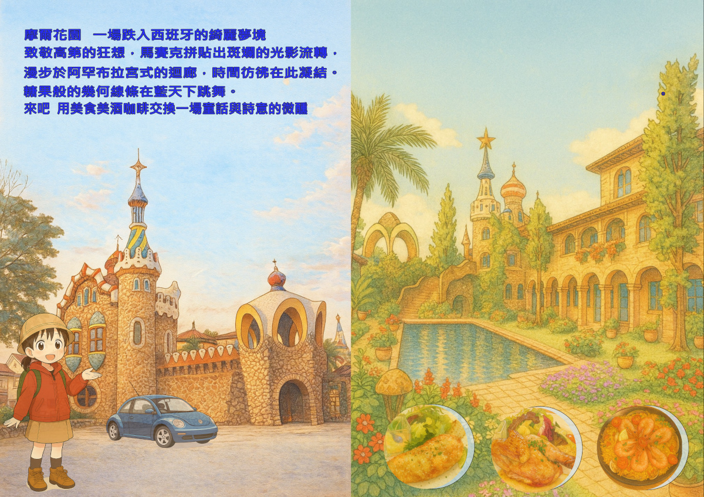

ILLUSTRATIONS
These works unfold over time —
from quiet nights, to imagined worlds, to places I have walked through.
They are not only scenes, but traces of a path, slowly taking shape.
They are not only scenes, but traces of a path, slowly taking shape.



